L'essentiel
Rôle. Le Gladiateur manie l'espadon : DPS de mêlée solide, assez robuste pour servir d'off-tank. Le vrai tank principal reste le Templier ; on voit souvent Gladiateur + Templier ensemble en raid de sanctuaire. Il est très fort en 1v1 et petits groupes, moins en grande bataille volante où les classes à distance dominent.
Le build en une phrase. Tes dégâts = 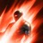 Fracas (Overhead Slam) spammé pendant
Fracas (Overhead Slam) spammé pendant
Monte
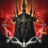
Position de charge +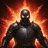
Bénédiction de Zikel + Explosion de fureur +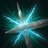
Blocage ciblé. 6 sources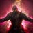
Riposte habile,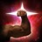
Préparation d'attaque, Rupture meurtrière,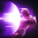
Coup de choc. 5 sourcesNezekan → Zikel → Vaizel → Triniel, d'abord les nœuds +1 sur tes 3 compétences principales. 4 sources
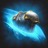
Coup acéré et ne tiennent plus que la touche macro (voir les désaccords).Rotation contre un boss
- Position de charge (Lunge Stance) + Bénédiction de Zikel (Zikel's Blessing) avant le pull, à la main. 3 sources
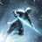
Frappe bondissante (Leaping Slam) ou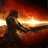
Coup féroce anéantissant (Ruinous Blow) pour entrer. Coup féroce anéantissant donne Prêt au combat (Prepare for Battle) : +dégâts PvE et +critique pendant 20 s. 4 sources- Blocage ciblé (Focused Block) sur une attaque prévisible du boss : parade garantie, et Riposte habile donne alors un buff de dégâts à tout le groupe. Les Coréens s'en servent aussi pour bloquer les attaques au sol (2 charges) au lieu d'esquiver. 3 sources
- Explosion de fureur (Rage Burst) ouvre la fenêtre
 Fracas : 10 s pendant lesquelles il est utilisable sans avoir renversé le boss. 4 sources
Fracas : 10 s pendant lesquelles il est utilisable sans avoir renversé le boss. 4 sources - Tiens la touche macro : Fracas en boucle, Coup féroce lacérant pour combler. 4 sources
- Boss étourdi (jauge de choc vide) :
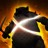
Lame déferlante (Sword Aura Rampage). 3 sources
Macro
Version standard : une seule ligne, le bas passe en premier
Retardement 10 ms partout (40 ms si tu as plus de 80 ms de ping). Touche macro sur un bouton de souris que tu peux tenir. 3 sources
Clic gauche ou pas ?
- Avant le 16 sur Fracas et Coup féroce lacérant : clic gauche Coup acéré (Keen Strike) + macro enfoncés ensemble, pour ne jamais manquer de PM.
- Après : macro seule. Coup féroce lacérant 16 rend 50 PM par critique ; Coup acéré ferait perdre des coups. débattu (voir Désaccords)
Variante coréenne haut niveau
Macro sur clic droit tenu, une seule ligne. Ajouter des stigmas dedans fait baisser le nombre de coups de 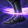 Fracas (objectif : 90 à 100 coups par cycle), donc les meilleurs joueurs lancent les stigmas à la main. Ligne :
Fracas (objectif : 90 à 100 coups par cycle), donc les meilleurs joueurs lancent les stigmas à la main. Ligne :  Fracas (quand elle s'active) → Coup féroce lacérant en fond. Sur un boss immunisé au renversement,
Fracas (quand elle s'active) → Coup féroce lacérant en fond. Sur un boss immunisé au renversement,  Fracas s'active à 7 % ; avec la spécialité 16 il part 3 à 5 fois d'affilée.
Fracas s'active à 7 % ; avec la spécialité 16 il part 3 à 5 fois d'affilée.
Variante « animation cancel »
Clic droit macro + clic gauche Coup acéré tenus ensemble : une ombre noire apparaît quand l'annulation réussit. Coup féroce anéantissant est mis en tête de macro car il est désormais instantané. 2 sources
Stigmas
4 emplacements en saison 1, débloqués aux niveaux 22, 27, 32 et 37. Les bonus des niveaux 5, 10, 15 et 20 s'activent tout seuls.
Vitesse de combat +20 %. Au 20 : 50 % de chances de réduire toutes les recharges de 1 s sur coup critique.
+20 % d'attaque au groupe, +précision. Au 5 : +50 de dégâts de choc au groupe.
Rend  Fracas utilisable pendant 10 s. Au 5, recharge 45 → 30 s.
Fracas utilisable pendant 10 s. Au 5, recharge 45 → 30 s.
Parade garantie, 2 charges au 5, rend PM et PV ; déclenche le buff de groupe de Riposte habile.
Remplaçants
Ordre de montée
Explosion de fureur → 5, Blocage ciblé → 5, Position de charge → 20, Bénédiction de Zikel → 5 à 10.
Fragments de stigma
- Coût par niveau : 1 fragment jusqu'au 5, 2 jusqu'au 10, 4 jusqu'au 15, 8 jusqu'au 20 (75 au total par stigma).
- Gains : 1 par niveau à partir du 23, 2 par niveau du 40 au 45 ; boutique Abyss, boutique Nightmare, festival Shugo, succès, passe de combat, fragments instables à transmuter.
- Impossible de changer de stigma en plein combat ; un reset rend les fragments mais coûte.
Pourcentages : part des 151 meilleurs gladiateurs suivis par Metabot (échantillon faible).
Compétences et spécialisations
Les spécialisations se débloquent au niveau 8, 12, 16 et 20 de la compétence : 16 et 20 sont les vrais paliers du build. Au 45, tu plafonnes vers 14-15 (10 en points + 4 via Daevanion) ; le 16 vient ensuite avec l'équipement.
Moteur principal de dégâts. Utilisable sur cible renversée, ou pendant Explosion de fureur.
Remplissage et solution aux problèmes de PM. Génère beaucoup d'inimitié.
Charge vers la cible et donne Prêt au combat (Prepare for Battle) pendant 20 s. Devenu instantané depuis le patch du 19 août.
Pendant l'étourdissement du boss. Spécialité : recharges réduites (−1 s ou −3 s selon les sources, à vérifier en jeu).
Ton clic gauche en montée de niveau.
Pour rester collé au boss et sauter de pack en pack.
Renversement qui ouvre  Fracas, deuxième outil pour revenir au contact.
Fracas, deuxième outil pour revenir au contact.
Chez les Coréens : ignore blocage/esquive + coups multiples, recharge remise à zéro sur blocage.
Seulement pour le farm de packs (vol de vie, recharge remise à zéro sur critique, attraction).
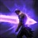
Épée dévastatrice (Mocking Blade) (c'est un outil PvP).Passifs
Dégâts de face, et buff d'attaque au groupe à chaque parade. Ne se cumule pas avec le buff Fureur du Templier, et a été un peu affaibli.
Attaque +10 %, défense, précision.
+10 % de dégâts critiques presque en permanence.
Pour la double chance ; fort aussi en PvP.
Ensuite
Détection des faiblesses (Identify Weakness) (critique, chance de renverser sur critique) 4 sources, 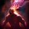
Stats et équipement
| Pièce | Ce qu'on cherche |
|---|---|
| Arme / garde | Vitesse de combat, bonus de dégâts d'arme, bonus de dégâts, Might, précision, coups multiples |
| Casque / cape | Double chance (autre avis : attaque, dégâts critiques, dégâts de face) |
| Épaules | Dégâts critiques |
| Gants | Vitesse de combat (consensus), Perfect Chance, bonus de dégâts |
| Torse, jambes, bottes | Perfect Chance + bonus dégâts / vitesse (off-tank : PV max, tolérance) |
| Anneaux | Niveaux de |
| Bracelet | Wisdom (double chance), Time (vitesse), Destruction (attaque) ; Freedom si la précision manque |
- Pierres de mana : bonus de dégâts de face, sinon dégâts d'arme ou critiques.
- Manque de PM : ajoute PM max et régénération.
- Ordre d'amélioration : arme unique +10, puis amulette Revelation et ceinture Noble, puis bottes ; ensuite l'emplacement le plus faible.
- Arcana : cartes qui boostent Fracas, Coup féroce lacérant, Coup féroce anéantissant, set offensif ; emplacement Calice pour combler les niveaux de compétence.
Daevanion
Ordre : Nezekan → Zikel → Vaizel → Triniel. Azphel seulement pour le PvP. Règle commune : nœuds bleus +1 sur tes 3 compétences principales, puis nœuds orange, puis passifs et stats. Chaque point Daevanion donne aussi 1 à 4 de score d'équipement.
| Plateau | Ce qu'on y prend (part des meilleurs joueurs) |
|---|---|
| Nezekan | +1 |
| Zikel | +1 Coup féroce lacérant (96 %), +1 |
| Vaizel | +1 Coup féroce lacérant (93 %), dégâts critiques |
| Triniel | +1 |
| Azphel | PvP : bonus de dégâts PvP, puis tolérance PvP |
Le reset des plateaux est presque gratuit pendant la montée : ne t'en prive pas.
Réglages du jeu
- Options → Commandes de combat → file d'attente des compétences activée (Combat controls → Skill queue).
- Options → Affichage des infos → Combat → indicateur d'orientation du boss (Display boss orientation indicator).
- Touche macro sur un bouton de souris que tu peux tenir.
Libellés des menus traduits par ce guide depuis l'anglais : vérifie l'intitulé exact dans ton client.
Builds alternatifs (vidéos YouTube)
Ce que chaque vidéo fait différemment du build de référence ci-dessus. Les liens s'ouvrent sur YouTube.
The Only Gladiator PVE Guide You Need | AION 2
- Clic gauche Coup acéré + macro tenus ensemble jusqu'au 16, puis macro seule : Coup acéré devient une perte de dégâts.
- Ordre des stigmas : Explosion de fureur → 5, Blocage ciblé → 5, puis tout dans Position de charge → 20 (« quasi 100 % d'uptime sur tous les buffs »).
- Lame déferlante 16 (−1 s sur toutes les recharges par coup) et Coup féroce anéantissant 16 : priorité 2 seulement.
- Frappe bondissante et Coup de ruée sur la même touche ;
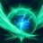
Dissipation de choc au 8 pour +20 % PV. - Plan Daevanion de leveling à 65 points (lien dans la description) : +2 niveaux sur les compétences principales.
Aion 2 Gladiator PvE DPS Guide - The Korean In-Game Macro Setup
- Stigmas « coréens » : Position de charge,
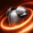
Armure d'onde, Explosion de fureur, puis le 4e selon le groupe (Bénédiction de Zikel ou Lame vampirique). - Macro du jeu sur deux colonnes : colonne 1 = Explosion de fureur / Lame vampirique / Lame déferlante / Coup féroce lacérant ; colonne 2 = Position de charge / Armure d'onde / Bénédiction de Zikel / Fracas. Les buffs partent tout seuls.
- Garde le clic gauche Coup acéré tenu avec la macro (clic droit).
- Coup féroce anéantissant hors macro : un buff à relancer toutes les 45 s, pas un bouton de dégâts.
- Objectif : 95 à 100 Coup montant (Upward Strike) par minute sur le mannequin ; les macros souris logicielles ne sont pas autorisées officiellement par NCSOFT.
AION 2 Gladiator PvE DPS Build – INSANE DAMAGE & Easy Rotation!
- 4e stigma : Lancer de lame (−30 % de défense au groupe) au lieu de Blocage ciblé ; Lame vampirique en alternative.
- Garde le clic gauche Coup acéré tout le temps (PM + recharge de Coup féroce anéantissant réduite).
- Juge Coup féroce lacérant 16 (PM sur critique) « pas forcément nécessaire ».
- Macro du jeu : Bénédiction de Zikel / Explosion de fureur / Lame déferlante, plus une macro souris logicielle (à éviter : non autorisée).
- Panthéon : Wisdom, Time, Destruction ; Genus Insight pour la puissance de combat.
AION 2 Gladiator DPS Build UPDATED! Best Skills, Stats & Macros
- Tests au mannequin : Lancer de lame est une perte de DPS (≈ 30 000), Armure d'onde aussi ; le meilleur trio + Blocage ciblé fait ≈ 32 000.
- Stigmas retenus : Position de charge (20, sinon 15 et le reste dans Bénédiction de Zikel 10), Bénédiction de Zikel, Explosion de fureur, Blocage ciblé.
- Macro en 3 lignes : buffs / Explosion de fureur / Coup féroce lacérant, clic gauche tenu pour l'animation cancel (ombres).
- Carte Arcana Calice sur Fracas, set 2 pièces « magie » pour récupérer 1 500 PM.
AION 2 Gladiator PvE Guide: Skills, Rotation, Makros & wichtige Tipps
- Sans Templier : Blocage ciblé remplace Bénédiction de Zikel ; avec un Templier, garde Bénédiction de Zikel (son buff de parade ne se cumule pas avec le tien).
- Épée dévastatrice et Onde broyeuse avec la spécialité de soin pour se soigner en donjon.
- Lame vampirique au 10 : buff de groupe Prédation (Predation), gros vol de vie pour tout le groupe.
- En début de jeu : lâche la macro et repasse au clic gauche quand les PM manquent.
AION 2 Gladiator Fresh LVL 45 Guide | Skills, Gear Score, Items
- « Inutile de monter » Bénédiction de Zikel : les points vont ailleurs.
- Lame déferlante 16 dans les compétences prioritaires.
- Au 45 on plafonne vers 14-15 (10 en points + 4 Daevanion).
- Checklist score d'équipement : donjons scellés, arme unique +10, expédition Dropnir pour les bottes, amulette Revelation, ceinture Noble, ~1000 de score avant l'Abyss.
AION 2 Gladiator Early Game Guide | Skills, Stigmas, Daevanion, Macro
- Stigmas en montée : Explosion de fureur au 22, Position de charge au 27 ; Blocage ciblé « pas nécessaire » en leveling.
- Spécialité « utilisable en bougeant » de Coup féroce lacérant placée au 12 (au 8 chez les autres).
- Plateaux Daevanion 10, 20, 30 : points sur Coup acéré, Coup féroce lacérant, Fracas.
- Passifs de montée : Riposte habile, Préparation d'attaque, Drain de sang en solo.
How to ANIMATION CANCEL in AION 2 + UPDATED Gladiator Macro Guide (PvE/PvP)
- Clic droit macro + clic gauche Coup acéré tenus ensemble : l'ombre noire signale une annulation réussie.
- Coup féroce anéantissant en tête de macro (devenu instantané) au lieu d'une touche à part.
- Reconnaît que certains joueurs font les mêmes dégâts sans l'animation cancel.
- Macro PvP minimale : animation cancel +
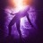
Contrainte aérienne, le reste à la main.
The ONLY Gladiator PvP Guide You Need | AION 2
- Préréglage PvP séparé (compétences, stigmas, titres, ailes) et un 3e pour le 10v10.
- Stigmas : Position de charge, Lancer de lame (−70 % de soins reçus), Persévérance, Blocage ciblé en arène ou
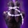
Contrainte forcée ; garde Bénédiction de Zikel. - Épée dévastatrice 16, Contrainte aérienne 16-20 avec Chute forcée (Forced Fall), Onde broyeuse pour le vol de vie.
- Daevanion Azphel (dégâts PvP), titre « Tread on White Wings », amulette PvP.
AION 2 Gladiator vs Templar - Tank Classes Guide! Beginners Guide 2026
- Le Gladiateur est un off-tank : en raid, Gladiateur + Templier ensemble.
- Riposte habile ne se cumule pas avec le buff du Templier et a été affaibli : avec un Templier, Lame vampirique gagne en intérêt.
- Bonne défense de base : on peut garder beaucoup d'attaque même en tankant.
[아이온 2] 올려치기 100타++ 고점 세팅 | 전직업 최적화 프로젝트, 검성편
- Macro sur clic droit, une seule ligne, sans stigmas dedans : ils se lancent à la main pour ne pas perdre de coups.
- Objectif 90 à 100 coups de Coup montant (Upward Strike) par cycle.
- Ajouter Contrainte aérienne au cycle baisse le nombre de coups mais monte le DPS.
- Stats : bonus de dégâts, dégâts critiques, double chance (강타) et attaque ; pierres de mana en dégâts de face.
[아이온2] 요새핫한 검성 내려찍기 스킬트리 빌드! "스킬 단축키 / 특화 추천까지"
- Lancer de lame obligatoire en raid ; Bénédiction de Zikel seulement au 5 (+50 de dégâts de choc au groupe).
- Macro : Entaille de chevilles → Fracas → Coup féroce lacérant, chacun quand il s'active.
- Coup féroce lacérant : « en bougeant » + « peu de cibles », sans la spécialité PM.
- Blocage ciblé (2 charges) pour bloquer les attaques au sol au lieu d'esquiver ; Lame déferlante 16 = −3 s.